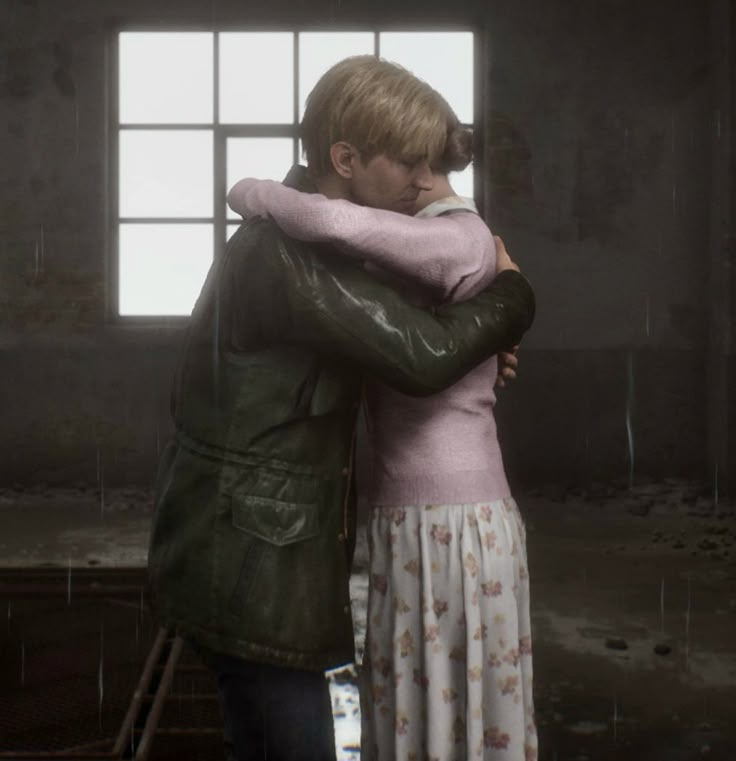
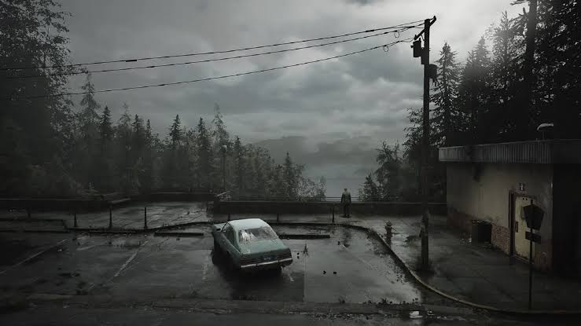
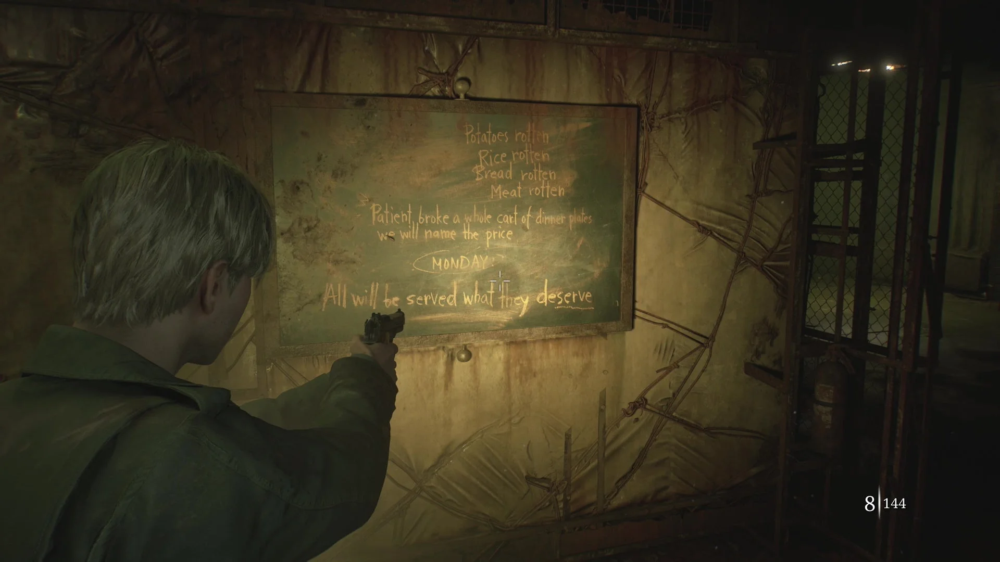
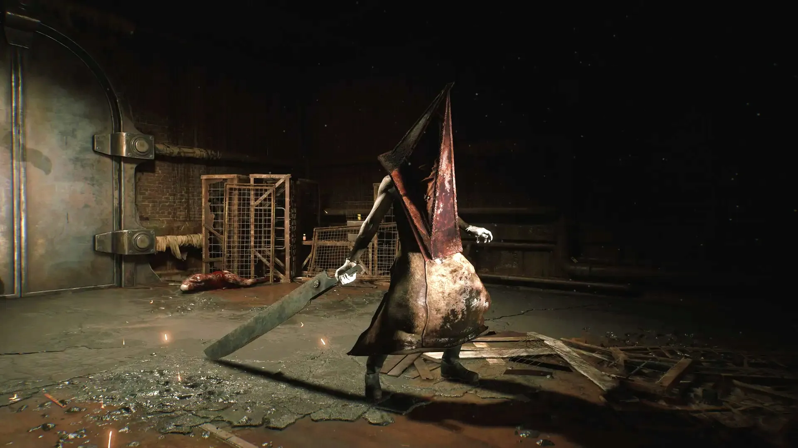
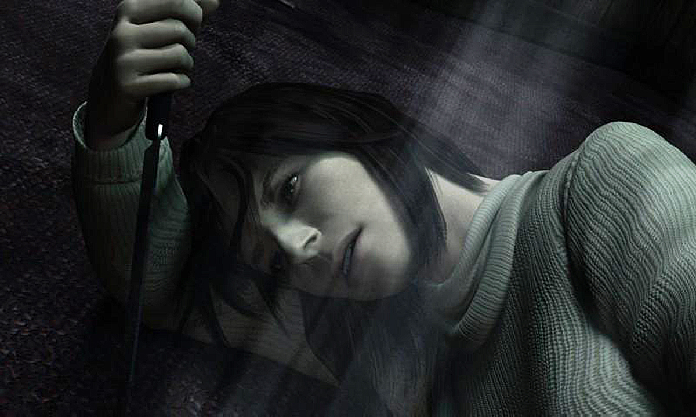
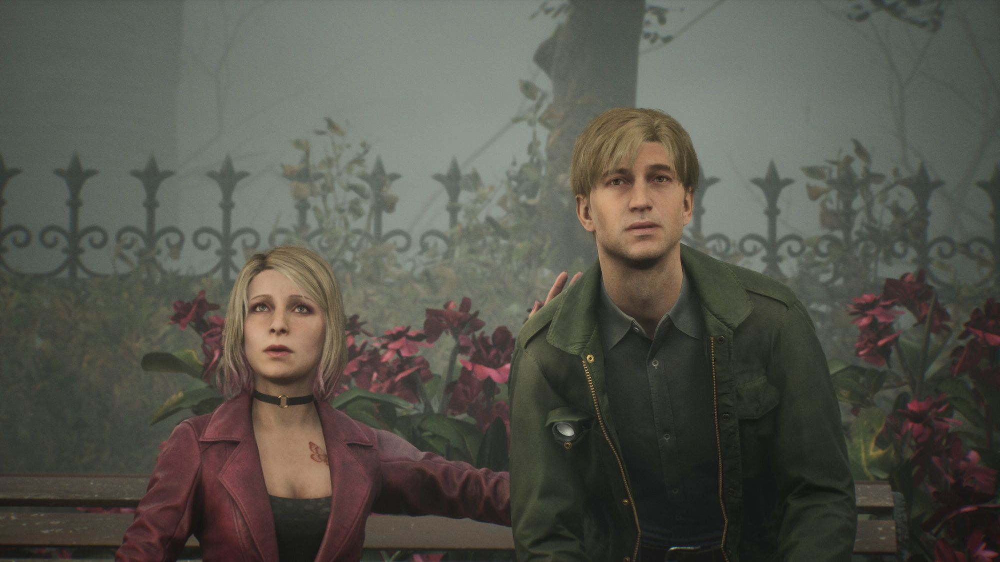

The Story of James Sunderland
Silent Hill 2 Remake follows James Sunderland, a man
who travels to the mysterious town of Silent Hill
after receiving a letter from his wife, Mary. The
letter claims that she is waiting for him in their
special place, even though she died three years
earlier. Confused and desperate for answers, James
enters the abandoned town to search for her.
As he explores its streets and buildings, he
encounters terrifying creatures and people who
seem to have their own connections to Silent Hill.
His journey gradually reveals that the town is
connected to something much darker than he first
realizes.

James and Mary Sunderland
James and Mary were married, but their relationship
became increasingly painful during Mary's serious
illness. James struggled with the emotional burden
of watching his wife suffer, while Mary experienced
fear, frustration, and anger about her condition.
Their relationship became complicated by love,
resentment, guilt, and exhaustion. James remembers
Mary in different ways throughout his journey,
making it difficult to separate his memories from
the truth. Their relationship is at the center
of the game's emotional story and explains much
of James's psychological struggle.

The Town of Silent Hill
Silent Hill is a mysterious town covered in thick
fog, with abandoned streets, ruined buildings,
and disturbing locations. In Silent Hill 2, the
town appears to respond to the psychological
struggles of the people who enter it. Rather than
being simply an abandoned place, Silent Hill
seems to transform into a personal nightmare
shaped by guilt, fear, memories, and trauma.
Different characters experience different horrors,
suggesting that the town reflects their inner
worlds. Its strange atmosphere makes it difficult
to know what is real and what may be a product
of the characters' minds.

The Otherworld
The Otherworld is a disturbing alternate version
of reality that appears throughout Silent Hill.
In the remake, familiar locations become rusted,
decayed, dark, and covered in disturbing materials.
The Otherworld makes the town feel like a physical
representation of a nightmare. Its environments
are often interpreted as reflecting James's
guilt and suffering, although the exact meaning
of every location is not always explained.
The transitions between the ordinary town and
the Otherworld create uncertainty about the
nature of James's experiences.

James's Guilt and Pyramid Head
Pyramid Head is one of the most important symbols
in James's story. This terrifying figure relentlessly
pursues him and represents his desire for punishment.
As James continues through Silent Hill, Pyramid
Head becomes connected to the guilt he is trying
to avoid. James's encounters with the creature
suggest that he cannot escape the truth simply
by running away from it. Pyramid Head is more
than just a powerful monster; he is closely tied
to the psychological conflict at the heart of
the game.

Angela Orosco
Angela Orosco is one of the people James meets
while exploring Silent Hill. She is searching
for her mother and carries deep emotional trauma
connected to abuse within her family. Angela's
experience of the town differs from James's,
and the disturbing environments she encounters
reflect her suffering. Her story explores the
lasting effects of abuse, fear, and isolation.
Angela's encounters with James also demonstrate
that the town's horrors are personal and that
people can experience the same place in very
different ways.

Eddie Dombrowski
Eddie Dombrowski is another troubled individual
James encounters in Silent Hill. Before arriving
in the town, Eddie was mocked and bullied because
of his appearance and behavior. He becomes
increasingly defensive and violent as the story
progresses. Eddie's journey explores humiliation,
resentment, and the danger of allowing anger
to control one's actions. Unlike James, who
struggles with guilt and punishment, Eddie
increasingly attempts to justify his own violence.
His story becomes an important contrast to
James's psychological journey.

Laura
Laura is a young girl James meets while searching
for Mary. Unlike the other adults he encounters,
Laura does not appear to experience Silent Hill
as the same terrifying nightmare. She knew Mary
during her time in the hospital and believes
that James never truly understood her. Laura's
presence challenges James's memories and forces
him to confront the possibility that his view
of the past is incomplete. Her role is important
because she provides another perspective on
Mary and the events surrounding her death.

The Truth About Mary
As James progresses through Silent Hill, fragments
of his memories reveal that his understanding
of Mary's death is incomplete. The truth is that
James smothered Mary with a pillow before arriving
in Silent Hill. His actions were connected to
the unbearable emotional strain of her illness,
but this does not erase his responsibility for
what he did. James had repressed the memory and
struggled to acknowledge his own actions.
The revelation changes the meaning of his
journey and explains why guilt and punishment
appear so strongly throughout the game.

The Meaning Behind the Horror
Silent Hill 2 uses psychological horror to explore
grief, guilt, denial, loneliness, and the difficulty
of accepting painful truths. Many of its monsters
and locations can be interpreted as reflections
of James's inner struggles. The town does not
simply frighten him; it forces him to encounter
memories and emotions he has tried to suppress.
The other characters have their own traumas,
showing that suffering can take many forms.
Ultimately, the story asks whether a person
can accept responsibility for the past and
find a way to live with it.